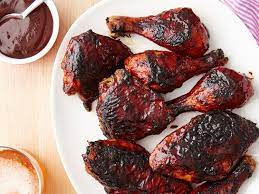

Lasgna

How to make BBQ Chicken
This Quick BBQ Chicken is an easy and tasty main dish that cooks up in under 30 minutes and can be paired with any number of sides. Perfect for weeknights!
Ingredients
- 1 tsp smoked paprika
- 1/2 tsp garlic powder
- 1/4 tsp salt
- 1/4 tsp freshly cracked black pepper
- 1 lb. boneless, skinless chicken
- 1 Tbsp cooking oil
- 1/4 cup BBQ sauce
Steps
- If using chicken breasts, pound them to an even thickness to ensure quick and even cooking. To pound the breast, place them on a cutting board and cover with a piece of plastic wrap. Use a mallet or rolling pin to pound the thicker areas to an even ½ to ¾-inch thickness. There is no need to pound chicken thighs.
- Combine the smoked paprika, garlic powder, salt, and pepper in a small bowl. Season both sides of the chicken pieces with the spice blend.
- Heat a large skillet over medium heat. Once hot, add the cooking oil and swirl to coat the surface of the skillet. Add the seasoned chicken and cook on each side until well browned and cooked through (an internal temperature of 165ºF), about 5-7 minutes on each side.
- Turn the heat off and brush both sides of the chicken with BBQ sauce. Let the chicken rest five minutes before slicing and/or serving.